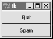

| I l@ve RuBoard |
|
7.4 DialogsDialogs are windows popped up by a script to provide or request additional information. They come in two flavors, modal and nonmodal:
Regardless of their modality, dialogs are generally implemented with the Toplevel window object we met in the prior section, whether you make the Toplevel or not. There are essentially three ways to present pop-up dialogs to users with Tkinter: by using common dialog calls, by using the now-dated Dialog object, and by creating custom dialog windows with Toplevels and other kinds of widgets. Let's explore the basics of all three schemes. 7.4.1 Standard (Common) DialogsBecause standard dialog calls are simpler, let's start here first. Tkinter comes with a collection of precoded dialog windows that implement many of the most common pop-ups programs generate -- file selection dialogs, error and warning pop-ups, and question and answer prompts. They are called standard dialogs (and sometimes "common" dialogs), because they are part of the Tkinter library, and use platform-specific library calls to look like they should on each platform. A Tkinter file open dialog, for instance, looks like any other on Windows. All standard dialog calls are modal (they don't return until the dialog box is dismissed by the user), and block the program's main window while displayed. Scripts can customize these dialogs' windows by passing message text, titles, and the like. Since they are so simple to use, let's jump right into Example 7-6. Example 7-6. PP2E\Gui\Tour\dlg1.pywfrom Tkinter import *
from tkMessageBox import *
def callback():
if askyesno('Verify', 'Do you really want to quit?'):
showwarning('Yes', 'Quit not yet implemented')
else:
showinfo('No', 'Quit has been cancelled')
errmsg = 'Sorry, no Spam allowed!'
Button(text='Quit', command=callback).pack(fill=X)
Button(text='Spam', command=(lambda: showerror('Spam', errmsg))).pack(fill=X)
mainloop()
A lambda anonymous function is used here to wrap the call to showerror, so that it is passed two hardcoded arguments (remember, button press callbacks get no arguments from Tkinter itself). When run, this script creates the main window in Figure 7-5. Figure 7-5. dlg1 main window: buttons to trigger pop-upsPressing this window's Quit button pops up the dialog in Figure 7-6, by calling the standard askyesno function in the tkmessagebox module. This looks different on Unix and Macintosh, but looks like you'd expect when run on Windows. This dialog blocks the program until the user clicks one of its buttons; if the dialog's Yes button is clicked (or the Enter key is pressed), the dialog call returns with a true value and the script pops up the standard dialog in Figure 7-7 by calling showwarning. Figure 7-6. dlg1 askyesno dialog (Windows)Figure 7-7. dlg1 showwarning dialogThere is nothing the user can do with Figure 7-7's dialog but press OK. If No is clicked in Figure 7-6's quit verification dialog, a showinfo call makes the pop-up in Figure 7-8 instead. Finally, if the Spam button is clicked in the main window, the standard dialog captured in Figure 7-9 is generated with the standard showerror call. Figure 7-8. dlg1 showinfo dialogFigure 7-9. dlg1 showerror dialogThis all makes for a lot of window pop-ups, of course, and you need to be careful not to rely on these dialogs too much (it's generally better to use input fields in long-lived windows, than to distract the user with pop-ups). But where appropriate, such pop-ups save coding time and provide a nice native look-and-feel. 7.4.1.1 A "smart" and reusable quit buttonLet's put some of these canned dialogs to better use. Example 7-7 implements an attachable Quit button that uses standard dialogs to verify the quit request. Because it's a class, it can be attached and reused in any application that needs a verifying Quit button. Because it uses standard dialogs, it looks as it should on each GUI platform. Example 7-7. PP2E\Gui\Tour\quitter.py#############################################
# a quit button that verifies exit requests;
# to reuse, attach an instance to other guis
#############################################
from Tkinter import * # get widget classes
from tkMessageBox import askokcancel # get canned std dialog
class Quitter(Frame): # subclass our GUI
def __init__(self, parent=None): # constructor method
Frame.__init__(self, parent)
self.pack()
widget = Button(self, text='Quit', command=self.quit)
widget.pack(side=LEFT)
def quit(self):
ans = askokcancel('Verify exit', "Really quit?")
if ans: Frame.quit(self)
if __name__ == '__main__': Quitter().mainloop()
This module is mostly meant to be used elsewhere, but puts up the button it implements when run standalone. Figure 7-10 shows the Quit button itself in the upper left, and the askokcancel verification dialog popped up when Quit is pressed. Figure 7-10. Quitter, with askokcancel dialogIf you press OK here, Quitter runs the Frame quit method to end the GUI to which this button is attached (really, the mainloop call). But to really understand how such a spring-loaded button can be useful, we need to move on to study a client GUI in the next section. 7.4.1.2 A dialog demo launcher barSo far, we've seen a handful of standard dialogs, but there quite a few more. But rather than just throwing these up in dull screen shots, let's write a Python demo script to generate them on demand. Here's one way to do it. First of all, in Example 7-8 we write a module to define a table that maps a demo name to a standard dialog call (and use lambda to wrap the call if we need to pass extra arguments to the dialog function). Example 7-8. PP2E\Gui\Tour\dialogTable.py# define a name:callback demos table
from tkFileDialog import askopenfilename # get standard dialogs
from tkColorChooser import askcolor # they live in Lib/lib-tk
from tkMessageBox import askquestion, showerror
from tkSimpleDialog import askfloat
demos = {
'Open': askopenfilename,
'Color': askcolor,
'Query': lambda: askquestion('Warning', 'You typed "rm *"\nConfirm?'),
'Error': lambda: showerror('Error!', "He's dead, Jim"),
'Input': lambda: askfloat('Entry', 'Enter credit card number')
}
I put this table in a module so that it might be reused as the basis of other demo scripts later (dialogs are more fun than printing to stdout). Next, we'll write a Python script, Example 7-9, that simply generates buttons for all of this table's entries -- use its keys as button labels, and its values as button callback handlers. Example 7-9. PP2E\Gui\Tour\demoDlg.pyfrom Tkinter import * # get base widget set
from dialogTable import demos # button callback handlers
from quitter import Quitter # attach a quit object to me
class Demo(Frame):
def __init__(self, parent=None):
Frame.__init__(self, parent)
self.pack()
Label(self, text="Basic demos").pack()
for (key, value) in demos.items():
Button(self, text=key, command=value).pack(side=TOP, fill=BOTH)
Quitter(self).pack(side=TOP, fill=BOTH)
if __name__ == '__main__': Demo().mainloop()
This script creates the window shown in Figure 7-11 when run as a standalone program; it's a bar of demo buttons, that simply route control back to the values of the table in module dialogTable when pressed. Figure 7-11. demoDlg main windowNotice that because this script is driven by the contents of the dialogTable module's dictionary, we can change the set of demo buttons displayed by changing just dialogTable (we don't need to change any executable code in demoDlg). Also note that the Quit button here is an attached instance of the Quitter class of the prior section -- it's at least one bit of code that you never have to write again. We've already seen some of the dialogs triggered by this demo bar window's other buttons, so I'll just step through the new ones here. Pressing the main window's Query button, for example, generates the standard pop-up in Figure 7-12. Figure 7-12. demoDlg query, askquestion dialogThis askquestion dialog looks like the askyesno we saw earlier, but actually returns either string "yes" or "no" (askyesno and askokcancel return 1 or 0, true or false). Pressing the demo bar's Input button generates the standard askfloat dialog box shown in Figure 7-13. Figure 7-13. demoDlg input, askfloat dialogThis dialog automatically checks the input for valid floating-point syntax before it returns, and is representative of a collection of single-value input dialogs (askinteger and askstring prompt for integer and string inputs too). It returns the input as a floating-point number object (not a string) on the OK button and enter key presses, or the Python None object if the user clicks Cancel. Its two relatives return the input as integer and string objects instead. When the demo bar's Open button is pressed, we get the standard file open dialog made by calling askopenfilename, and captured in Figure 7-14. This is Windows look-and-feel; it looks radically different on Linux, but appropriately so. Figure 7-14. demoDlg open, askopenfilename dialogA similar dialog for selecting a save-as filename is produced by calling asksaveasfilename (see the Text widget section under Section 8.4 in Chapter 8 for an example). Both file dialogs let the user navigate through the filesystem to select a subject filename, returned with its full directory pathname when Open is pressed; an empty string comes back if Cancel is pressed instead. Both also have additional protocols not demonstrated by this example:
We'll use most of these interfaces later in the book, especially for the file dialogs in the PyEdit example in Chapter 9 (but feel free to flip ahead for more details now). Finally, the demo bar's Color button triggers a standard askcolor call, which generates the standard color selection dialog shown in Figure 7-15. Figure 7-15. demoDlg color, askcolor dialogIf you press its OK button it returns a data structure the identifies the selected color, which can be used in all color contexts in Tkinter. It includes RGB values and a hexadecimal color string (e.g., ((160, 160, 160), '#a0a0a0')). More on how this tuple can be useful in a moment. If you press Cancel, the script gets back a tuple containing two nones (Nones of the Python variety, that is). 7.4.1.3 Printing dialog results (and passing callback data with lambdas)The dialog demo launcher bar displays standard dialogs, and can be made to display others by simply changing the dialogTable module it imports. As coded, though, it really only shows dialogs; it would also be nice to see their return values so we know how to use them in scripts. Example 7-10 adds printing of standard dialog results to the stdout standard output stream. Example 7-10. PP2E\Gui\Tour\demoDlg-print.py####################################################
# same, but show returns values of dialog calls;
# the lambda saves data from the local scope to be
# passed to the handler (button handlers normally
# get no args) and works like this def statement:
# def func(self=self, name=key): self.printit(name)
####################################################
from Tkinter import * # get base widget set
from dialogTable import demos # button callback handlers
from quitter import Quitter # attach a quit object to me
class Demo(Frame):
def __init__(self, parent=None):
Frame.__init__(self, parent)
self.pack()
Label(self, text="Basic demos").pack()
for (key, value) in demos.items():
func = (lambda self=self, name=key: self.printit(name))
Button(self, text=key, command=func).pack(side=TOP, fill=BOTH)
Quitter(self).pack(side=TOP, fill=BOTH)
def printit(self, name):
print name, 'returns =>', demos[name]() # fetch, call, print
if __name__ == '__main__': Demo().mainloop()
This script builds the same main button-bar window, but notice that the callback handler is an anonymous function made with a lambda now, not a direct reference to dialog calls in the imported dialogTable dictionary: func = (lambda self=self, name=key: self.printit(name)) This is the first time we've actually used lambda like this, so let's get the facts straight. Because button press callbacks are run with no arguments, if we need to pass extra data to the handler it must be wrapped in an object that remembers that extra data and passes it along. Here, a button press runs the function generated by the lambda -- an indirect call layer that retains information from the enclosing scope by assigning it to default arguments. The net effect is that the real handler, printit, receives an extra name argument giving the demo associated with the button pressed, even though this argument wasn't passed back from Tkinter itself. Notice, though, that this lambda assigns both self and key to defaults, to retain them for use on callbacks. Like all functions, lambda results only have access to their local scope, the enclosing global module scope, and the built-in names scope -- not the local scope of the method function that created them, and that is where name self really lives. Because bound methods remember both a self object and a method function, this lambda could also be written like this: func = (lambda handler=self.printit, name=key: handler(name)) You can also use a callable class object here that retains state as instance attributes (see the tutorial's __call__ example in Chapter 6 for hints). But as a rule of thumb, if you want a lambda's result to use any names from the enclosing scope when later called, simply pass them in as defaults. When run, this script prints dialog return values; here is the output after clicking all the demos buttons in the main window, and picking both Cancel/No and OK/Yes buttons in each dialog: C:\...\PP2E\Gui\Tour>python demoDlg-print.py Error returns => ok Input returns => None Input returns => 3.14159 Open returns => Open returns => C:/PP2ndEd/examples/PP2E/Gui/Tour/demoDlg-print.py Query returns => no Query returns => yes Color returns => (None, None) Color returns => ((160, 160, 160), '#a0a0a0') Now that I've shown you these dialog results, I want to next show you how one of them can actually be useful. 7.4.1.4 Letting users select colors on the flyThe standard color selection dialog isn't just another pretty face -- scripts can pass the hexadecimal color string it returns to the bg and fg widget color configuration options we met earlier. That is, bg and fg accept both a color name (e.g., "blue") and an askcolor result strings that starts with a # (e.g., the #a0a0a0 in the last output line of the prior section). This adds another dimension of customization to Tkinter GUIs: Rather than hard-coding colors in your GUI products, you can provide a button that pops up color selectors that let users choose color preferences on the fly. Simply pass the color string to widget config methods in callback handlers, as in Example 7-11. Example 7-11. PP2E\Gui\Tour\setcolor.pyfrom Tkinter import *
from tkColorChooser import askcolor
def setBgColor():
(triple, hexstr) = askcolor()
if hexstr:
print hexstr
push.config(bg=hexstr)
root = Tk()
push = Button(root, text='Set Background Color', command=setBgColor)
push.config(height=3, font=('times', 20, 'bold'))
push.pack(expand=YES, fill=BOTH)
root.mainloop()
This script makes the window in Figure 7-16 when launched (its button's background is a sort of green, but you'll have to trust me on this). Pressing the button pops up the color selection dialog shown earlier; the color you pick in that dialog becomes the background color of this button after you press OK. Figure 7-16. setcolor main windowColor strings are also printed to the stdout stream (the console window); run this on your computer to experiment with available color settings: C:\...\PP2E\Gui\Tour>python setcolor.py #c27cc5 #5fe28c #69d8cd 7.4.1.5 Other standard dialog callsWe've seen most of the standard dialogs and will use these pop-ups in examples throughout the rest of this book. But for more details on other calls and options available, either consult other Tkinter documentation, or browse the source code of the modules used at the top of the dialogTable module; all are simple Python files installed in the lib-tk subdirectory of the Python source library on your machine. And keep this demo bar example filed away for future reference; we'll reuse it later in the tour when we meet other button-like widgets. 7.4.2 The Old-Style Dialog ModuleIn older Python code, you may see dialogs occasionally coded with the standard Dialog module. This is a bit dated now, and uses an X Windows look-and-feel; but just in case you run across such code in your Python maintenance excursions, Example 7-12 gives you a feel for the interface. Example 7-12. PP2E\Gui\Tour\dlg-old.pyfrom Tkinter import *
from Dialog import Dialog
class OldDialogDemo(Frame):
def __init__(self, master=None):
Frame.__init__(self, master)
Pack.config(self) # same as self.pack()
Button(self, text='Pop1', command=self.dialog1).pack()
Button(self, text='Pop2', command=self.dialog2).pack()
def dialog1(self):
ans = Dialog(self,
title = 'Popup Fun!',
text = 'An example of a popup-dialog '
'box, using older "Dialog.py".',
bitmap = 'questhead',
default = 0, strings = ('Yes', 'No', 'Cancel'))
if ans.num == 0: self.dialog2()
def dialog2(self):
Dialog(self, title = 'HAL-9000',
text = "I'm afraid I can't let you do that, Dave...",
bitmap = 'hourglass',
default = 0, strings = ('spam', 'SPAM'))
if __name__ == '__main__': OldDialogDemo().mainloop()
You supply Dialog a tuple of button labels and a message, and get back the index of the button pressed (the leftmost is index zero). Dialog windows are modal: the rest of the application's windows are disabled until the Dialog receives a response from the user. When you press the Pop2 button in the main window created by this script, the second dialog pops up, as shown in Figure 7-17. Figure 7-17. Old-style dialogThis is running on Windows, and as you can see, is nothing like what you would expect on that platform for a question dialog. In fact, this dialog generates an X Windows look-and-feel, regardless of the underlying platform. Because of both Dialog's appearance and the extra complexity required to program it, you are probably better off using the standard dialog calls of the prior section instead. 7.4.3 Custom DialogsThe dialogs we've seen so far all have a standard appearance and interaction. They are fine for many purposes, but often we need something a bit more custom. For example, forms that request multiple field inputs (e.g., name, age, shoe size) aren't directly addressed by the common dialog library. We could pop-up one single-input dialog in turn for each requested field, but that isn't exactly user-friendly. Custom dialogs support arbitrary interfaces, but they are also the most complicated to program. Even so, there's not much to it -- simply create a pop-up window as a Toplevel with attached widgets, and arrange a callback handler to fetch user inputs entered in the dialog (if any) and destroy the window. To make such a custom dialog modal, we also need to wait for a reply, by giving the window input focus, making other windows inactive, and waiting for an event. Example 7-13 illustrates the basics. Example 7-13. PP2E\Gui\Tour\dlg-custom.pyimport sys
from Tkinter import *
makemodal = (len(sys.argv) > 1)
def dialog():
win = Toplevel() # make a new window
Label(win, text='Hard drive reformatted!').pack() # add a few widgets
Button(win, text='OK', command=win.destroy).pack() # set destroy callback
if makemodal:
win.focus_set() # take over input focus,
win.grab_set() # disable other windows while I'm open,
win.wait_window() # and wait here until win destroyed
print 'dialog exit' # else returns right away
root = Tk()
Button(root, text='popup', command=dialog).pack()
root.mainloop()
This script is set up to create a pop-up dialog window in either modal or nonmodal mode, depending on its makemodal global variable. If it is run with no command-line arguments, it picks nonmodal style, captured in Figure 7-18. Figure 7-18. Nonmodal custom dialogs at workThe window in the upper right is the root window here; pressing its "popup" button creates a new pop-up dialog window. Because dialogs are nonmodal in this mode, the root window remains active after a dialog is popped up. In fact, nonmodal dialogs never block other windows, so you can keep pressing the root's button to generate as many copies of the pop-up window as will fit on your screen. Any or all of the pop-ups can be killed by pressing their OK buttons, without killing other windows in this display. 7.4.3.1 Making custom dialogs modalNow, when the script is run with a command-line argument (e.g., python dlg-custom.py 1), it makes its pop-ups modal instead. Because modal dialogs grab all of the interface's attention, the main window becomes inactive in this mode until the pop-up is killed; you can't even click on it to reactivate it while the dialog is open. Because of that, you can never make more than one copy of the pop-up on screen at once, as shown in Figure 7-19. Figure 7-19. A modal custom dialog at workIn fact, the call to the dialog function in this script doesn't return until the dialog window on the left is dismissed by pressing its OK button. The net effect is that modal dialogs impose a function call-like model on an otherwise event-driven programming model -- user inputs can be processed right away, not in a callback handler triggered at some arbitrary point in the future. Forcing such a linear control flow on a GUI takes a bit of extra work, though. The secret to locking other windows and waiting for a reply boils down to three lines of code, which are a general pattern repeated in most custom modal dialogs:
Because the script waits for a window destroy event, it must also arrange for a callback handler to destroy the window in response to interaction with widgets in the dialog window (the only window active). This example's dialog is simply informational, so its OK button calls the window's destroy method. In user-input dialogs, we might instead install an Enter key-press callback handler that fetches data typed into an Entry widget, and then calls destroy (see later in this chapter). 7.4.3.2 Other ways to be modalModal dialogs are typically implemented by waiting for a newly created pop-up window's destroy event, as in this example. But other schemes are viable too. For example, it's possible to create dialog windows ahead of time, and show and hide them as needed with the top-level window's deiconify and withdraw methods (see the alarm scripts in Chapter 8 under Section 8.7 for details). Given that window creation speed is generally fast enough as to appear instantaneous today, this is much less common than making and destroying a window from scratch on each interaction. It's also possible to implement a modal state by waiting for a Tkinter variable to change its value, instead of waiting for a window to be destroyed. See this chapter's discussion of Tkinter variables (which are class objects, not normal Python variables) and the wait_variable method discussed near the end of Chapter 8 for more details. This scheme allows a long-lived dialog box's callback handler to signal a state change to a waiting main program, without having to destroy the dialog box. Finally, if you call the mainloop method recursively, the call won't return until the widget quit method has been invoked. The quit method terminates a mainloop call, and so normally ends a GUI program. But it will simply exit a recursive mainloop level if one is active. Because of this, modal dialogs can also be written without wait method calls if you are careful. For instance, Example 7-14 works the same as dlg-custom. Example 7-14. PP2E\Gui\Tour\dlg-recursive.pyfrom Tkinter import *
def dialog():
win = Toplevel() # make a new window
Label(win, text='Hard drive reformatted!').pack() # add a few widgets
Button(win, text='OK', command=win.quit).pack() # set quit callback
win.protocol('WM_DELETE_WINDOW', win.quit) # quit on wm close too!
win.focus_set() # take over input focus,
win.grab_set() # disable other windows while I'm open,
win.mainloop() # and start a nested event loop to wait
win.destroy()
print 'dialog exit'
root = Tk()
Button(root, text='popup', command=dialog).pack()
root.mainloop()
If you go this route, be sure to call quit instead of destroy in dialog callback handlers (destroy doesn't terminate the mainloop level), and be sure to use protocol to make the window border close button call quit too (or else it doesn't end the recursive mainloop level call, and will generate odd error messages when your program finally exits). Because of this extra complexity, you're probably better off using wait_window or wait_variable, not recursive mainloop calls. We'll see how to build form-like dialogs with labels and input fields later in this chapter when we meet Entry, and again when we study the grid manager in Chapter 8. For more custom dialog examples, see ShellGui (Chapter 9), PyMailGui (Chapter 11), PyCalc (Chapter 18), and the nonmodal form.py (Chapter 10). Here, we're moving on to learn more about events that will prove to be useful currency at later tour destinations. |
| I l@ve RuBoard |
|